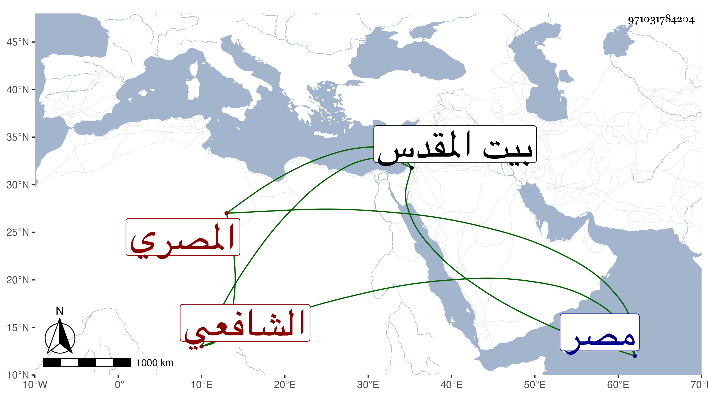

0902Sakhawi.DawLamic.ITO20230111-ara1.EIS1600.971031784204
Biography ID: 971031784204
279
محمد بن يعقوب أفضل الدين المصري الشافعي . أخذ عن إبرهيم العجلوني واختص به من صغره وهلم جرا وتميز في الفضائل مع عقل وتؤدة وطلب الحديث وقتا وسمع من بقايا الشيوخ وكذا سمع بالقدس من جماعة وتولع بالنظم وتردد إلي كثيرا وكتب عني أشياء وسمع علي مناقب العباس تأليفي بحضرة أمير المؤمنين وسمعته ينشد قوله :
| بروحي خود تخجل الشمس في الضحى | بها مهج العشاق ليست بناجيه |
| أموت غراما من مخافة خلفها | وأهلك من هجرانها وهي ناجيه |
وانقطع بمصر للتكسب بالشهادة قليلا وغيره أروج منه فيها وهو الآن في سنة تسع وتسعين أمثل من بها فضلا وعقلا وانجماعا .
